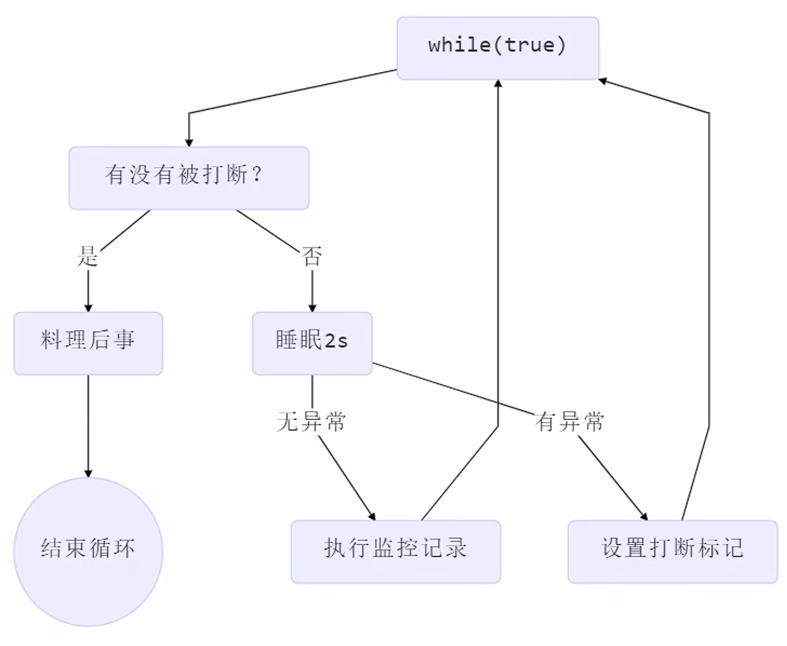
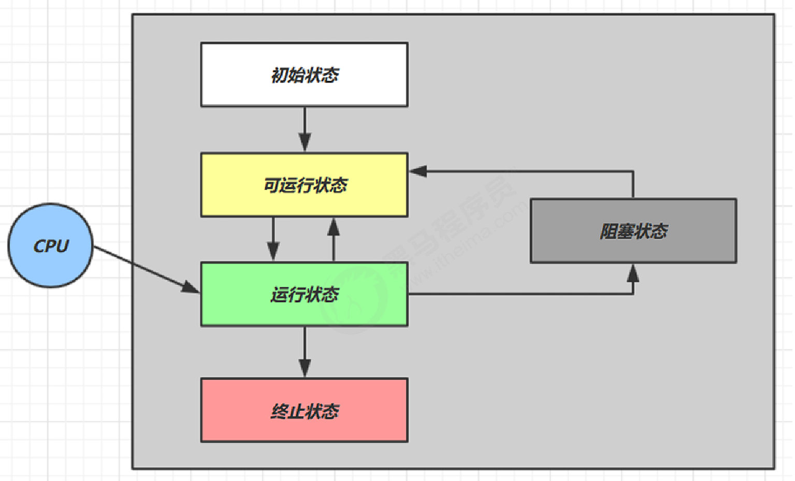
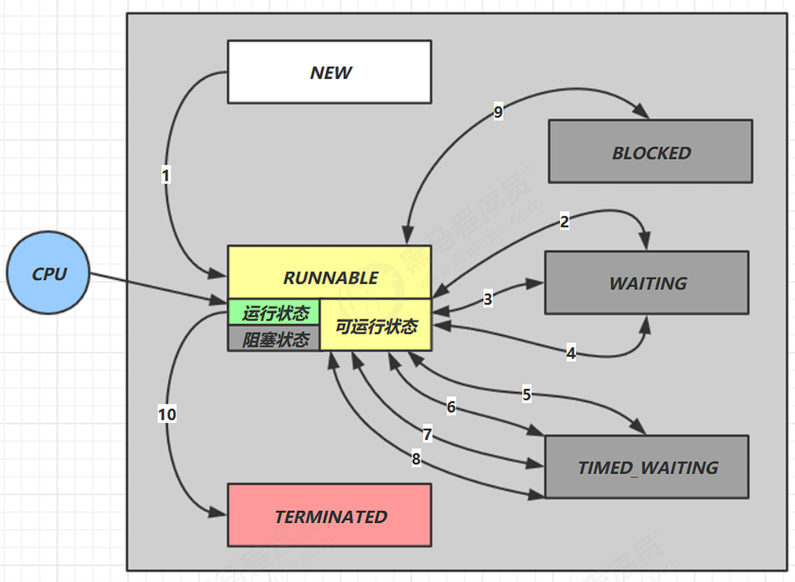

Java线程¶
创建和启动线程¶
Thread匿名类¶
// 创建线程对象
Thread t = new Thread(){
@Override
public void run() {
// 线程执行的代码
log.info("Running...");
}
};
// 启动线程
t.start();
Note
建议为线程指定名字
可以通过线程对象的 setName(String name) 方法为线程指定名字
Runnable（推荐）¶
Runnable r = new Runnable() {
@Override
public void run() {
// 需要执行的任务
log.info("Running...");
}
};
Thread t2 = new Thread(r, "Test2");
t2.start();
Tip
可使用lambda表达式简化
Runnable r = () -> log.info("Running...");
原理解析
Thread中的run 方法：
@Override
public void run() {
if (target != null) {
target.run();
}
}
- Thread匿名类重写了该方法，实现任务执行
- Runnable会被赋值给target变量，然后执行其中的任务
FutureTask¶
FutureTask 能够接收 Callable 类型的参数，用来处理有返回结果的情况
// 创建任务对象
FutureTask<Integer> task = new FutureTask<>(() -> {
log.info("Running...");
Thread.sleep(2000);
return 200;
});
// 创建线程对象
Thread t = new Thread(task);
t.start();
log.info("Waiting...");
log.debug("Result: {}", task.get());
输出
03-29 13:51:18 [main] INFO com.ysh.Test - Start
03-29 13:51:18 [main] INFO com.ysh.Test - Waiting...
03-29 13:51:18 [Thread-0] INFO com.ysh.Test - Running...
03-29 13:51:20 [main] DEBUG com.ysh.Test - Result: 200
03-29 13:51:20 [main] INFO com.ysh.Test - End
查看进程线程¶
windows
-
任务管理器可以查看进程和线程数，也可以用来杀死进程
-
tasklist查看进程 -
taskkill杀死进程
linux
-
ps -fe查看所有进程 -
ps -fT -p查看某个进程（PID）的所有线程 -
kill杀死进程 -
top按大写 H 切换是否显示线程 -
top -H -p查看某个进程（PID）的所有线程
Java
jps命令查看所有 Java 进程jstack查看某个 Java 进程（PID）的所有线程状态jconsole来查看某个 Java 进程中线程的运行情况（图形界面）
jconsole 远程监控配置
需要以如下方式运行你的 java 类
java -Djava.rmi.server.hostname=`ip地址` -Dcom.sun.management.jmxremote Dcom.sun.management.jmxremote.port=`连接端口` -Dcom.sun.management.jmxremote.ssl=是否安全连接 Dcom.sun.management.jmxremote.authenticate=是否认证 java类
- 修改 /etc/hosts 文件将 127.0.0.1 映射至主机名
- 如果要认证访问，还需要做如下步骤
- 复制 jmxremote.password 文件
- 修改 jmxremote.password 和 jmxremote.access 文件的权限为 600 即文件所有者可读写
- 连接时填入 controlRole（用户名），R&D（密码）
线程原理¶
栈与栈帧¶
Java Virtual Machine Stacks （Java 虚拟机栈）
JVM 内存有堆、栈、方法区，栈会为每一个线程分配一块栈内存。
- 每个栈由多个栈帧组成，对应每次方法调用
- 每个线程只能有一个活动栈帧，对应当前正在执行的方法
线程上下文切换(Thread Context Switch)¶
引起线程上下文切换的情况：
- 线程的CPU时间片使用完
- JVM进行垃圾回收
- 有更高优先级的线程需要运行
- 线程调用了
sleep、yield、wait、join、park、synchronized、lock等方法
当 Context Switch 发生时，需要由操作系统保存当前线程的状态，并恢复另一个线程的状态，Java 中对应的概念就是程序计数器（Program Counter Register），它的作用是记住下一条 jvm 指令的执行地址，是线程私有的
- 状态包括程序计数器、虚拟机栈中每个栈帧的信息，如局部变量、操作数栈、返回地址等
- Context Switch 频繁发生会影响性能
¶
线程常见方法¶
| 方法名 | 功能 | 注意 |
|---|---|---|
| start() | 启动一个线程 | start 方法只是让线程进入就绪，里面代码不一定立刻运行，只能调用一次 |
| run() | 线程启动后会执行的方法 | 手动调用该方法不会启动线程 |
| join() | 等待线程运行结束 | |
| join(long n) | 等待线程运行结束,最多等待 n 毫秒 | |
| getId() | 获取线程ID | ID唯一 |
| getName() | 获取线程名 | |
| setName() | 修改线程名 | |
| setPriority() | 修改线程优先级 | java中规定线程优先级是1~10 的整数，较大的优先级 能提高该线程被 CPU 调度的机率 |
| getPriority() | 获取线程优先级 | |
| getState() | 获取线程状态 | Java 中线程状态是用 6 个 enum 表示，分别为： NEW, RUNNABLE, BLOCKED, WAITING, TIMED_WAITING, TERMINATED |
| isAlive() | 线程是否存活（还没有执行完） | |
| isInterrupted() | 判断线程是否被打断 | 不会清除 打断标记 |
| interrupt() | 打断线程 | 如果被打断线程正在 sleep，wait，join 会导致被打断 的线程抛出 InterruptedException，并清除打断标记，如果打断的正在运行的线程，则会设置 打断标记，park 的线程被打断，也会设置打断标记 |
| interrupted() | 打断线程 | 静态方法，会清除 打断标记 |
| currentThread() | 获取当前正在执行的线程 | 静态方法 |
| sleep(long n) | 使线程休眠 | 静态方法 |
| yield() | 提示线程调度器 让出当前线程对 CPU的使用 | 静态方法 |
run() 和 start()¶
- 直接调用
run()方法，实际上仍然由main线程执行，并不会创建新线程。 - 调用
start()方法，会新建线程，并由新线程执行run()方法。
Caution
start()方法每个线程对象只能调用一次，再次调用会抛出异常
sleep() 和 yield()¶
sleep
-
调用 sleep 会让当前线程从 Running 进入 Timed Waiting 状态（阻塞）
-
其它线程可以使用 interrupt 方法打断正在睡眠的线程，这时 sleep 方法会抛出
InterruptedException -
睡眠结束后的线程未必会立刻得到执行
-
建议用
TimeUnit的 sleep 代替 Thread 的 sleep 来获得更好的可读性
try {
// 当前线程休眠1秒
TimeUnit.SECONDS.sleep(1);
} catch (InterruptedException e) {
e.printStackTrace();
}
yield
- 调用 yield 会让当前线程从 Running 进入 Runnable 就绪状态，然后调度执行其它线程
- 具体的实现依赖于操作系统的任务调度器
案例
防止 CPU 100%占用：
线程不需要执行任务时，不要让while(true)空转占用 CPU ，应该使用yield或者sleep让出 CPU 资源
线程优先级¶
- 线程优先级会提示（hint）调度器优先调度该线程，但它仅仅是一个提示，调度器可以忽略它
- 如果 cpu 比较忙，那么优先级高的线程会获得更多的时间片，但 cpu 空闲时，优先级几乎没作用
join()¶
对于如下代码，主线程打印出 r 的值为 0，因为主线程并不会等待t1线程运行完后才打印
static int r = 0;
public static void main(String[] args) throws InterruptedException {
test1();
}
private static void test1() throws InterruptedException {
log.debug("开始");
Thread t1 = new Thread(() -> {
log.debug("开始");
sleep(1);
log.debug("结束");
r = 10;
});
t1.start();
log.debug("结果为:{}", r);
log.debug("结束");
}
在 t1.start() 之后调用 t1.join()，主线程则会等待 t1 执行结束（线程同步）
Tip
带参数的join方法会等待指定时间，如果线程执行时间小于等待时间，join会提前结束，如果等待时间小于线程执行时间，会在到达等待时间后结束。
interrupt()¶
打断 sleep，wait，join 的线程
这几个方法都会让线程进入阻塞状态
打断 sleep 的线程, 会清空打断状态（调用isInterrupted()返回的boolean值）
打断正常运行的线程
Thread t1 = new Thread(() -> {
while (true) {
boolean interrupted = Thread.currentThread().isInterrupted();
if (interrupted) {
log.info("Thread1 interrupted");
break;
}
log.info("Thread1 running");
}
});
t1.start();
TimeUnit.SECONDS.sleep(1);
t1.interrupt();
设计模式-两阶段终止¶

private Thread monitor;
public void start() {
monitor = new Thread(() -> {
while (true) {
Thread current = Thread.currentThread();
if (current.isInterrupted()) {
log.info("被打断，处理中...");
// ...
break;
}
try {
Thread.sleep(1000);
log.info("监控中...");
} catch (InterruptedException e) {
// 重新设置中断状态
current.interrupt();
}
}
log.info("监控结束");
});
monitor.start();
}
public void stop() {
monitor.interrupt();
}
注意
由于线程可能在sleep时被打断，而此时打断标记会被置为false，所以需要重新设置打断标记
Tip
建议使用volatile关键字修饰的boolean变量作为线程停止标志
打断park线程¶
打断park线程，不会清空打断状态
Thread t1 = new Thread(() -> {
log.debug("park...");
LockSupport.park();
log.debug("unpark...");
log.debug("打断状态：{}", Thread.currentThread().isInterrupted());
},"t1");
t1.start();
sleep(0.5);
t1.interrupt();
输出打断状态为 true
Note
如果在park之前打断标记已经是true，那么park时会失效
¶
不推荐的方法¶
如下方法容易破坏同步代码块，造成死锁，JDK官方已经不推荐使用
| 方法 | 功能 |
|---|---|
| stop() | 停止线程 |
| suspend() | 挂起（暂停）线程 |
| resume() | 恢复线程运行 |
守护线程¶
默认情况下，Java 进程需要等待所有线程都运行结束，才会结束。
但是有一种特殊的线程叫做守护线程，只要其它非守护线程运行结束了，即使守护线程的代码没有执行完，也会强制结束。
如下方法可将线程设置为守护线程
public final void setDaemon(boolean on)
Example
- 垃圾回收器线程就是一种守护线程
- Tomcat 中的 Acceptor 和 Poller 线程都是守护线程，所以 Tomcat 接收到 shutdown 命令后，不会等待它们处理完当前请求
线程状态¶
从 操作系统 层面来描述线程状态：

- 【初始状态】仅是在语言层面创建了线程对象，还未与操作系统线程关联
- 【可运行状态】（就绪状态）指该线程已经被创建（与操作系统线程关联），可以由 CPU 调度执行
- 【运行状态】指获取了 CPU 时间片运行中的状态
- 当 CPU 时间片用完，会从【运行状态】转换至【可运行状态】，会导致线程的上下文切换
- 【阻塞状态】
- 如果调用了阻塞 API，如 BIO 读写文件，这时该线程实际不会用到 CPU，会导致线程上下文切换，进入 【阻塞状态】
- 等 BIO 操作完毕，会由操作系统唤醒阻塞的线程，转换至【可运行状态】
- 与【可运行状态】的区别是，对【阻塞状态】的线程来说只要它们一直不唤醒，调度器就一直不会考虑调度它们
- 【终止状态】表示线程已经执行完毕，生命周期已经结束，不会再转换为其它状态
六种状态¶
从 Java API 层面来描述：
Thread.State 枚举，分为六种状态

NEW线程刚被创建，但是还没有调用 start() 方法RUNNABLE当调用了 start() 方法之后，注意，Java API 层面的 RUNNABLE 状态涵盖了 操作系统 层面的 【可运行状态】、【运行状态】和【阻塞状态】（由于 BIO 导致的线程阻塞，在 Java 里无法区分，仍然认为是可运行）BLOCKED，WAITING，TIMED_WAITING都是 Java API 层面对【阻塞状态】的细分TERMINATED线程代码运行结束
上一节： 进程与线程
下一节： 锁